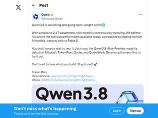
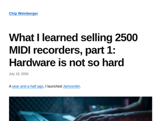
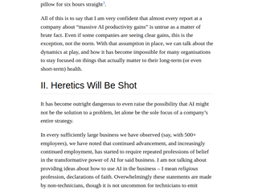
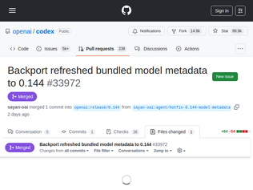

"Thank you for posting this, it reaffirms what I've been thinking for so long. There are many opportunities to retrofit old systems of all types with modern low-cost embedded technologies.Around 2019 or so I was approached by an engineer who had a small business retrofitting very old machine tools with modern motion controls. Think very large lathes and planers. The problem they had was that in order to get these systems working with newer controls, they had to make time-consuming modifications to the old machines, in some cases modifying the axis motors and that cost added up quickly. The engineer realized that it was theoretically possible to take the old analog position signals and convert them into something a modern motion controller could read. That converter box would make the retrofit pretty much plug & play, but he didn't have the programming expertise to make it happen.We probably built the first iteration of the converter for under $50 in parts and less than 50 hours of development time. That had me searching for other similar opportunities. I have found a few, but they tend to be one-offs that aren't worth the time unless you're already building something similar. Either that or my ability to see opportunity sucks!"
"Lol, nice! It depends on what you mean by "owning a bowling center," but it looks like there are at least two of us into this :DI bought a really old fully mechanical (and automated!) mini bowling lane. It works without a CPU, except for the score display, which originally used a 1970 Intel D8749H (MCS-48)!Just like yours, the only thing that turns this machine on is a single relay :D On my model, I also get feedback on the pin status and a "ball received" signal, so I can trigger the scoring.I dumped the firmware and replaced the display PCB with a more recent DIY PCB with an Arduino that speaks a modern, documented protocol. It's now compatible with ScoreMore software, and I can do a lot more with it.Here are some pictures and more info on the Bowltech forum (you should post your stuff here too!):* https://www.bowltech.com/forum/small-scale-bowling/small-sca...@vik8 on discord if you need :)"
"I grew up behind the bowling machines. My dad was a bowling machine mechanic and worked on machines all around the midwest. He often moon-lite as the on-duty mechanic during league nights and I'd go with him.Mostly he worked at the local 16-lane alley with ancient AMF machines. The logic was all relays in a "chassis" on each machine. Relays would fail, pins and balls would end up where they're not supposed to be, folks would roll the ball into the sweep. All kinds of stuff. As a kid was was fantastic to see. A pinsetter machine is a real Rube Goldberg type contraption. Probably lead me to being an engineer.We had the several opportunities to buy a small-town bowling center, but looking at the economics -- even back in the 1980's -- wasn't good. Most of the operating profit back then came from alcohol sales and that's a totally different business.Good luck! Recently Facebook has been showing me a lot of bowling content. Be cool if it's making a comeback."

"I’m a developer from China. So, is this what Hacker News is all about? Whenever a model comes from China, the comments section stops discussing its technical architecture, optimisation points or real-world performance, and instead starts going on about politics, human rights and all that rubbish? To be honest, we Chinese IT professionals possess a genuine geek spirit. That’s why you’re lagging behind in open-source competitions—it’s got nothing to do with politics; you’ve simply lost sight of your original aspirations."
"(I can't draw a pelican for this one because Alibaba Cloud have flagged my email address and won't let me pay them for access. So I'm waiting for the open weights release, or for the new model to show up on OpenRouter.)"
"I assume that this announcement has been prompted by that of Moonshot AI, which has just announced a 2.8T parameter open-weights LLM, Kimi K3, to be published on Huggingface by 27 July.Now the response of Alibaba is that they will also publish soon a big open weights LLM, the 2.4T parameter Qwen 3.8.I wonder if Alibaba has always planned to make this big LLM open weights, or they have chosen to do this now, to better compete with Moonshot AI.In any case, from this competition in LLMs, we win."
"Drilling into the original article where Jarred explained the reasoning behind the change, It's pretty clear that under zig the team was doing things by hand that are automatic in rust.Humans and agents share one thing: they are both non-deterministic. He talks about the issue of tracking memory lifecycles manually in zig so it can be explicitly freed. As expected, this leads to a long list of bugs where people missed things.Rust does this automatically. It removes an entire class of errors from his backlog. From an engineering management perspective, this looks like a pretty good trade.The bonus here is that compiler errors are exactly the kind of deterministic guardrail you need to put around coding agents. Claude works really well if you give it a way to test for correctness and "make it compile" is a pretty good target.There's a general version of this: the artifact you expose plus the test you run on it. Deterministic tests turn stochastic output into a hard guarantee. Wrote it up here if useful: https://michael.roth.rocks/blog/verification-surface/"
"Bah.Personally my take on the entire affair is quite negative, whatever Jarred or Simonw says about it.I think Bun owned by Anthropic and the entire rewrite with AI is not the real point (even if it's quite interesting, though).My take is that Jarred, and Bun,didn't demonstrate a serious, adult approach, from "this is my branch, you are overreacting" message to just proceeding with a 1mil+ PR merged in less than month.The communication is the issue, and it was handled very badly, in a way that impacted trust and divisions.Was it so difficult to adopt the approach that the TS team adopted for 7.0?"
"> For me this outputs Bun v1.4.0 (macOS arm64). The most recent release of Bun on GitHub is currently v1.3.14 from May 12th, so that v1.4.0 version number in Claude supports them shipping a preview of a not-yet-released Bun version.And so, the FOSS project "Bun" silently dies in darkness and is now something completely else. I'm glad I still had "Investigate if Bun is worth it" on my TODO list and hadn't yet gotten to it.What is the governance structure for Bun by the way? Couldn't find any documents/explanations about how it's supposed to work. I'm guessing it's essentially just "Anthropic decides what gets done and accepted" today?"

"Hardware has a reputation for being hard for three reasons. First, it scales differently than software. It's far harder to design something you want to make a million of than something you want to make ten of. Second, it's harder to anticipate, test, and correct all the things that can go wrong on the user end. Some people will put batteries the wrong way, some will drop the device on the ground, some will connect it to some vintage equipment you have never seen in your life, etc. And third, there are just more failure modes in an unfamiliar domain - sometimes, your code will intermittently crash not because you have a software bug, but because you put the decoupling capacitor too far from the chip. Or, just as you finish your design, the chip you designed it around becomes obsolete, or impossible to find because a factory in Indonesia is on fire.Another complication is that at least in theory, if you're selling electronics, there are actual regulations and third-party testing that needs to happen, and if you fail emissions, you might have to redo your design from scratch. Imagine we had that for software - "your JS is too big, you can't ship until you get it under 50 kB".So, I'm happy for the author, but I think he had an outlier experience. When you look at Kickstarter stories, people repeatedly stumble over this. Manufacturing / cost difficulties, supplier issues, reliability issues, etc."
"Very happy JamCorder customer here. I've started playing in improv shows since I bought it too, and it's nice to have those on record!It's rare that I come across a product I have literally zero complaints about, or any feedback to offer. Even my concern that it was tied to an app that might disappear one day is of course covered by the fact that it's all just MIDI files on a card.Thank you so much for making this, it's basically a perfect product for me and I love it. No notes."
">But for me the take away still is: “hardware is as hard as you make it”.I dislike this statement. Hardware is as hard as the product dictates it needs to be. A 25 component PCBA and a clamshell of 2 injection molded parts is about as simple of a product as you can make. Heck, most people would just buy an off the shelf clamshell for that type of product.That doesn't work for the vast majority of products, building a product with 20 COTS parts plus 60 custom tooled parts, and 4 complex PCBAs is what is hard. Getting everything to fit together, pass testing, arrive on time from dozens of suppliers, etc. it where the complexity comes in. Then consider that hardware is cash intensive, you need to pay ahead of time for all the tools, you need to pay to buy the individual parts and warehouse them somewhere while you build the products you hope are going to sell. If something goes wrong there, then your expensive parts are just sitting there waiting for replacement components before you can ship. Then even when you ship, that revenue goes into buying the next round of parts you are going to receive in 3 months. This is where many hardware projects fail as they run out of cash before the project breaks even."

"[delayed]"
"Most of us on some level felt confident that AI would completely revolutionise our society. The singularity made sense to me, at least. It hasn't worked out like that, but rather than accept the crushing reality of our mistake and take a second to re-evaluate, we've decided to LARP out the future we promised ourselves by crowbar-and-vaselineing AI into every crack and crevice we can find and loudly proclaiming progress.It's like some 90s kid with a Nintendo power glove who's convinced themselves that this makes them a hacker. This is not the singularity.I personally can't wait for this to end, and for everyone to collectively get back to waiting for whatever the next golden ticket that's supposed to solve all of our problems turns out to be."
"This part toward the end of the article resonated with me:> If you’re being asked to review huge volumes of terrible AI code, just assume that the organisation is going to burn you out and fire you. You will not convince the person drowning you in 2000 line PRs to stop. Start looking for a new job as if you have already been fired. I have seen this happen many times nowI suspect we will see this phenomenon more and more as organizations more widely adopt agentic development."
"A little over 10 years ago I remember meeting a postdoc who believed he had something close to a counterexample to the Jacobian Conjecture. He and another person was bruteforcing polynomials in about 16 variables, something like 80 - 700 terms each, using binary trees for mapping coefficients.They were guessing, at the time, that the lower bound of a counterexample (P, Q) for max(deg(P), deg(Q)) would go up to 200.To think that Claude Fable was able to find a counterexample in degree 7 is insane to me. We are truly in a new era."
"This is a rare instance where feeding this groundbreaking information into an LLM gives _them_ psychosis. I fed this to claude code and watched it verify the result in 7 different ways to be 100% certain, and it was just flabbergasted. Quite remarkable."
"Given how small the counterexample is... this feels like a great example of where a lot of interesting results are going to be found: not because they were super difficult, but because intelligence didn't scale, and until computers could do this for us, the number of people who seriously poked at many such things was low.I'm very excited for the impact of this effect in science and medicine and other disciplines too."

"I know a lot of people like to say that compaction makes this moot, but the level of detail you lose across compaction is wildly too much for most things that I do, unfortunately.Perhaps if your plans don't have as much detail, or if you're not, for example, having a discussion with a lot of nitty-gritty then it's fine?The lack of long context is the main reason that I still end up using Anthropic.The worst is when you need it to hold for example a number of papers in its head, or large and complex materials that it needs full resolution on and your context window ends up being perennially at 16%. You have about five minutes of conversation and it compacts and then you have to wait for it to read that again, get to 16%... and repeat.372 was not perfect, but it was so much better and a godsend. It turned that 12 to 20% into more like 40%."
"I don't know if this is why they did it, but I think it is generally a mistake to go beyond this context size anyway.I don't think people realize how much dumber the models get at larger contexts and how much more the token cost is. I never let claude get about 300k and in general I don't compact, I just divide up the work in chunks where I can fit it into 300k and I try to keep really clean and slim docs and modular code bases.It's still kind of annoying, sometimes the larger context is useful for one time tasks, but I think if you are regularly going beyond 300k you are losing a lot and probably have a poorly designed code base."
"This was tweeted about when it happened, with some explanation from Tibo here: https://x.com/thsottiaux/status/2076543065045795309"
"This study is pretty bad. The comment (https://news.ycombinator.com/item?id=48970182) on the other link with the direct PDF explains the problem well, which is that nothing here being tested is specific to AI systems.This study gave people access to an LLM that the researchers knew would give incorrect answers to certain questions, and then quizzed people on those questions, with the option to not respond to a given question if they are unsure about the answer.This is akin to giving someone a textbook on an obscure subject that has certain factual errors, letting them know they can use that textbook in a quiz on that subject, and then quizzing that person on those facts that the textbook gets wrong.Obviously that person is both more likely to be willing to respond to the question and is more likely to get it wrong!There are a lot of things I'm very interested in that are specific to modern LLMs and how they affect learning and confidence (sycophancy, cognitive helplessness, etc.).This study tested none of those. Its experimental setup is not very different than simply substituting the LLM with a textbook with errors."
"Advice and information subreddits have gone to shit because of AI usage. A large number of people seem to think that when someone asks a question, what they really want is not someone with direct knowledge, but instead someone to relay the question to ChatGPT and post the result as if it is their own hard earned knowledge and insight. I have no idea about the quality of this research but in the real world (well, real-ish, as real as Reddit can be) it is stark, people aren’t just refusing to say “I don’t know” they’re actively seeking out opportunities to pretend they know things."
"AI pessimist view.Even if AI gets smarter it will still be agreeable, and people will use it to more confidently reinforce thier stupider ideas, especially in areas where they lack the knowledge to know if they are right.Even if this can be solved, technically, people won't want to use the model that says they are wrong, so they will choose the glib lies that reinforce their beliefs.Freedown of speech forces people to think they may be wrong, but freedom of association lets people avoid this. AI is going to be internet hug box echo chambers at an unbelievable scale."
"For a no hacks alternative, I built TV Explorer. It puts the channel's published HLS stream into your browser with no interim steps. Uses the public GitHub list of more than 10,000 free channels.https://tvexplorer.live"
"This situation where bots have to run a headless browser in a new profile is just stupid. Can we have the old internet back? Please? Cloudflare you're not stopping bots, you're just wasting effort on both sides while siphoning access logs and passwords to the NSA."
"> I built it because I couldn't cast web video from my laptop to my TV: no Chromecast, no AirPlay.Looks like Claude built it."
"The lwjgl bindings for this were written by a member of the GTNH modpack team, thereby completing the chain of vanilla->modded->vanilla once more https://github.com/LWJGL/lwjgl3/pull/1033"
"I recently converted a game, Tribal Trouble (https://github.com/bondolo/tribaltrouble) from GLFW to SDL3. It was mostly a painless refactor though I did have some issues with full screen exclusive modes and desktop full screen but was eventually able to resolve those.I ended writing a demo for screen mode handling to test and document the fiddly bits.https://github.com/bondolo/SDL3-Fullscreen-DemoThe game is Java, like Minecraft, the demo is C because I wanted to keep it as simple as possible."
"> Known Issues> Exclusive fullscreen mode on Windows may cause the game to crash in certain situations, especially when using multiple monitors> Entering Exclusive fullscreen mode crashes the game on WaylandThose, together, kinda seem like the kind of blocking bug that would usually delay a snapshot... Lets hoping it gets fixed before release lands..."

Show HN: I replaced a $120k bowling center system with $1,600 in ESP32s
"Thank you for posting this, it reaffirms what I've been thinking for so long. There are many opportunities to retrofit old systems of all types with modern low-cost embedded technologies.Around 2019 or so I was approached by an engineer who had a small business retrofitting very old machine tools with modern motion controls. Think very large lathes and planers. The problem they had was that in order to get these systems working with newer controls, they had to make time-consuming modifications to the old machines, in some cases modifying the axis motors and that cost added up quickly. The engineer realized that it was theoretically possible to take the old analog position signals and convert them into something a modern motion controller could read. That converter box would make the retrofit pretty much plug & play, but he didn't have the programming expertise to make it happen.We probably built the first iteration of the converter for under $50 in parts and less than 50 hours of development time. That had me searching for other similar opportunities. I have found a few, but they tend to be one-offs that aren't worth the time unless you're already building something similar. Either that or my ability to see opportunity sucks!"
"Lol, nice! It depends on what you mean by "owning a bowling center," but it looks like there are at least two of us into this :DI bought a really old fully mechanical (and automated!) mini bowling lane. It works without a CPU, except for the score display, which originally used a 1970 Intel D8749H (MCS-48)!Just like yours, the only thing that turns this machine on is a single relay :D On my model, I also get feedback on the pin status and a "ball received" signal, so I can trigger the scoring.I dumped the firmware and replaced the display PCB with a more recent DIY PCB with an Arduino that speaks a modern, documented protocol. It's now compatible with ScoreMore software, and I can do a lot more with it.Here are some pictures and more info on the Bowltech forum (you should post your stuff here too!):* https://www.bowltech.com/forum/small-scale-bowling/small-sca...@vik8 on discord if you need :)"
"I grew up behind the bowling machines. My dad was a bowling machine mechanic and worked on machines all around the midwest. He often moon-lite as the on-duty mechanic during league nights and I'd go with him.Mostly he worked at the local 16-lane alley with ancient AMF machines. The logic was all relays in a "chassis" on each machine. Relays would fail, pins and balls would end up where they're not supposed to be, folks would roll the ball into the sweep. All kinds of stuff. As a kid was was fantastic to see. A pinsetter machine is a real Rube Goldberg type contraption. Probably lead me to being an engineer.We had the several opportunities to buy a small-town bowling center, but looking at the economics -- even back in the 1980's -- wasn't good. Most of the operating profit back then came from alcohol sales and that's a totally different business.Good luck! Recently Facebook has been showing me a lot of bowling content. Be cool if it's making a comeback."